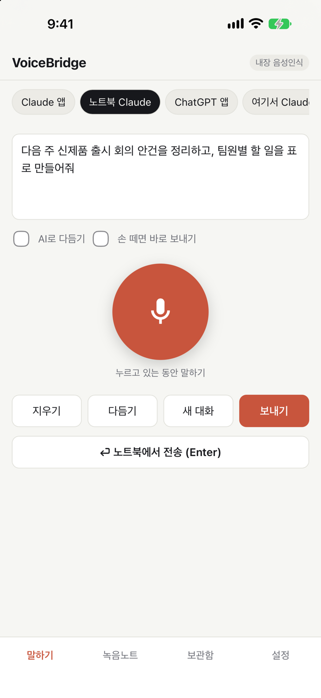
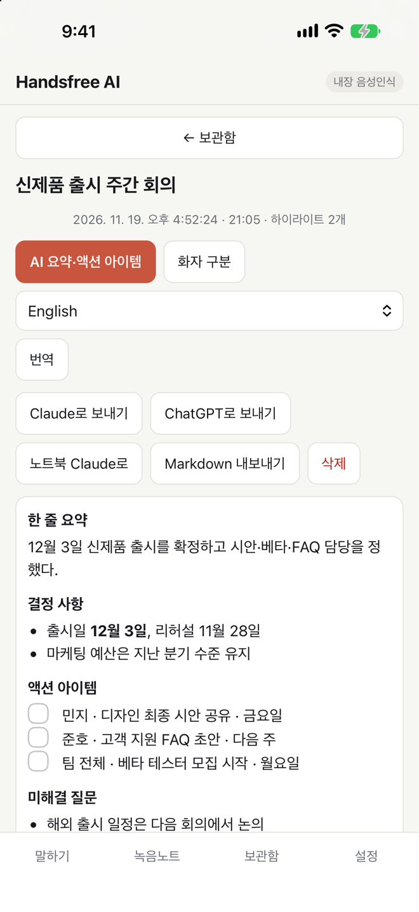
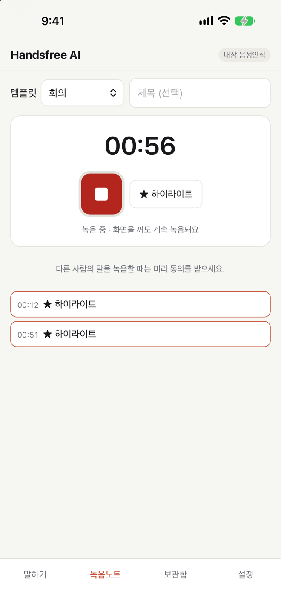
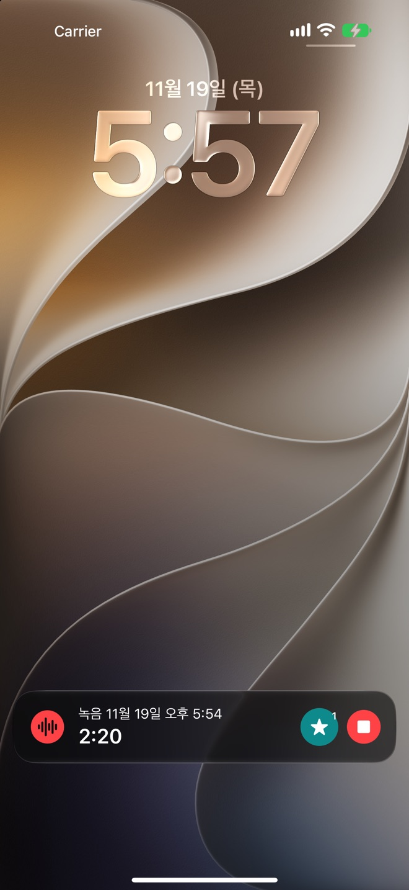

폰에 말하면,
노트북 Claude에 바로 들어갑니다
아이폰의 버튼을 누르고 말하세요. 받아쓴 글이 같은 Wi-Fi의 노트북 Claude 데스크톱 앱 입력창에 들어가고, 원하면 전송까지 됩니다. 키보드 없이 AI와 일하는 가장 빠른 방법.
Mac 도우미 다운로드 macOS 14+
아이폰 앱 · App Store 출시 예정
Mac 도우미는 Apple 공증을 받은 앱입니다. 무료입니다.
노트북 연결하기 (처음 한 번, 2분)
- Mac 도우미 설치 — 위 버튼으로 받은 zip을 열고 Handsfree AI Helper를 ‘응용 프로그램’ 폴더로 옮긴 뒤 실행하세요. (실행하면 ‘Handsfree AI 도우미’ 창이 열려요.)
- 손쉬운 사용 허용 — 시스템 설정 → 개인정보 보호 및 보안 → 손쉬운 사용에서 Handsfree AI 도우미를 켜세요. Claude 입력창에 글을 넣으려면 필요합니다.
- 아이폰에서 연결 — Handsfree AI 앱 → 설정 → 같은 Wi-Fi에서 노트북 찾기 → 노트북 이름 선택 → 도우미 창에 보이는 6자리 코드 입력.
- 말하고 보내기 — 말하기 탭에서 보낼 곳을 노트북 Claude로 두고, 버튼을 누른 채 말한 뒤 보내기. 노트북 Claude에서 바로 전송됩니다.
노트북에 Claude 데스크톱 앱이 설치되어 있어야 합니다. 아이폰과 노트북은 같은 Wi-Fi에 있어야 합니다.
할 수 있는 것
노트북 Claude로 음성 입력
보내기 한 번에 입력과 전송까지. 입력만 하고 직접 확인 후 보낼 수도 있어요.
화면을 꺼도 녹음
회의·강의를 주머니 속에서 녹음. 잠금화면에서 시간 확인, ★ 하이라이트, 정지.
앱을 열지 않고 시작
제어 센터, 잠금화면 버튼, 액션 버튼, Siri로 바로 녹음.
AI 회의록
한 줄 요약, 결정 사항, 담당자별 할 일, 화자 구분, 번역, 질문하기.
화면



